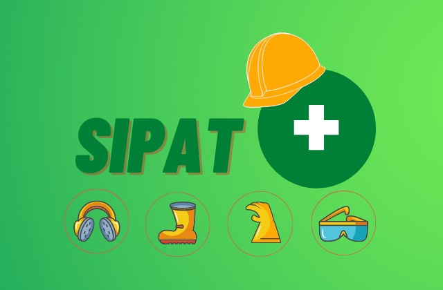
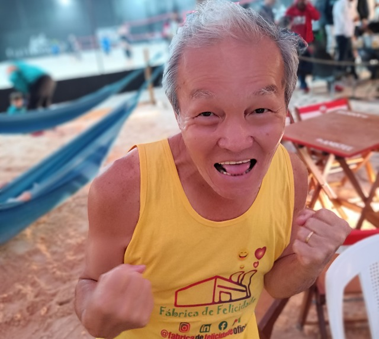

Fábrica de Felicidade - 2022
CIPA e SIPAT
Por Shin emO que é SIPAT?
SIPAT é uma semana que acontece dentro das empresas onde são promovidas várias ações com intuito de prevenir acidentes, falar sobre saúde e segurança no trabalho.
Tradicionalmente são apresentadas diversas palestras e teatrinhos. Bombeiros, médicos, técnicos de segurança no trabalho falam os temas e fazem demonstrações.
A SIPAT é obrigatória em todas empresas do Brasil, de acordo com a portaria N° 3.214, NR05, item 5.3.1-i disponível neste link no site oficial do governo.
O que é CIPA?
A SIPAT é organizada pela CIPA da empresa. CIPA significa Comissão Interna de Prevenção de Acidentes, que também possui outras funções sobre conscientização da segurança no trabalho durante todo o ano.
Os integrantes da CIPA são escolhidos pelos próprios funcionários. Caso haja mais de um grupo interessado em constituir a CIPA, é feita uma eleição interna na empresa.
Após definido o comitê, estes se reúnem periodicamente para discutir ações e cuidados relacionados à segurança no trabalho em geral.
Resumindo, a SIPAT é um evento de uma semana realizado anualmente pela equipe da CIPA.
SIPAT na prática
Não existe um script padrão para a execução da SIPAT, fazendo com que muitos dos funcionários não gostem de participar. Alguns comemoraram por ter um tempo para cochilar ou por não precisar trabalhar.
E isso acaba sendo natural. Ficar sentado assistindo palestras e teatrinhos, geralmente na luz baixa, resulta em um ambiente sonolento. E então o propósito acaba se perdendo, que é passar um conteúdo que agregue no dia a dia dos funcionários.
Algumas soluções modernas foram criadas para deixar os colaboradores mais ativos e poderem absorver as informações da SIPAT.
Soluções Modernas para SIPAT
Uma dessas empresas é a Fábrica de Felicidade . Ao invés dos expectadores assistirem a SIPAT eles também interagem. É 100% do público acordado e com a mente ativa para receber conteúdo.
Outro estímulo é o Senhor Miagui de 70 anos, um dos fundadores da Fábrica de Felicidade. Participa de todas as apresentações dando um exemplo de saúde, superação e longevidade.
Se a sua empresa ainda não tem CIPA corra atrás pois é um item obrigatório. E se for fazer a SIPAT, que seja algo prazeroso e também agregue valor à sua empresa.
Gratidão pela leitura 🙏 e um forte abraço 🤗.